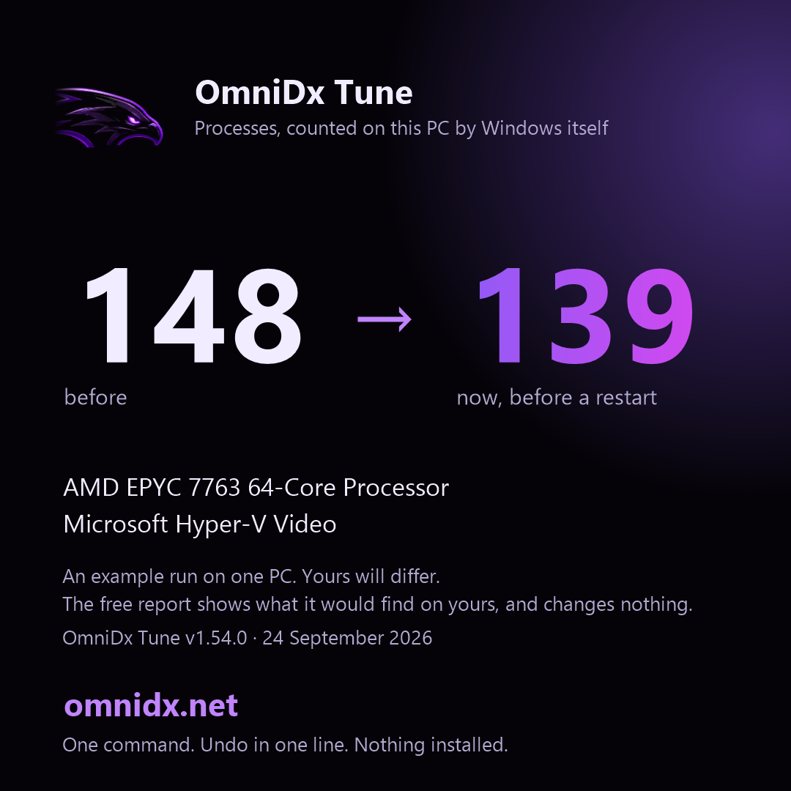

OmniDx Tune v1.54.0
OmniDx Tune v1.54.0
Thursday, September 24, 2026 8:11 AM · AMD EPYC 7763 64-Core Processor · Microsoft Hyper-V Video · 16 GB · Microsoft Corporation Virtual Machine
The card, for posting (the same numbers, on one picture): ci-card.png

Many of the "now" processes are only waiting to be stopped. The number after a restart is the one that counts; C:\OmniDx\after-restart.txt gets it at your next sign-in. Kept cut: a task at each sign-in puts back what a Windows update turns on; undo removes it.
Next steps
- Restart. The services told to stop are still unwinding until you do, and the after-restart count lands in C:\OmniDx\after-restart.txt at your next sign-in, with the boot time of that start next to the one from before the tune.
- BIOS: items 1 to 3 (memory profile, Re-Size BAR, CSM). Ten minutes, and the memory profile alone is the biggest free gain any PC has.
- GPU control panel: low latency mode, power management and V-Sync, from the list below. Two minutes.
- Launchers and overlays: the list below names the one or two settings in each that matter; the overlays are the usual cause of a stutter that "came from nowhere".
- Any time: $env:OMNIDX_MODE='status'; irm omnidx.net/go.ps1 | iex shows what is still in place; undo is one line, and it is in this report.
Before and after
| Before | Now | |
|---|---|---|
| Processes | 148 | 139 |
| Threads | 1515 | 1472 |
| Handles | 49699 | 47427 |
| Memory in use | 2867 MB | 2974 MB |
| Idle CPU | 0.8% | 1.4% |
| DPC time | 0% | 0.13% |
Gone, by name
Running before, not running now: spoolsv
Every process, before (57 names)
svchost x81 1,193 MB conhost x4 33 MB taskhostw x3 64 MB WmiPrvSE x3 61 MB csrss x2 14 MB fontdrvhost x2 11 MB notepad x2 59 MB SMSvcHost x2 50 MB AzureArcSysTray x1 19 MB backgroundTaskHost x1 36 MB ctfmon x1 26 MB DefenderSessionHelper x1 6 MB dockerd x1 46 MB dwm x1 76 MB explorer x1 159 MB hosted-compute-agent x1 21 MB Idle x1 0 MB LsaIso x1 4 MB lsass x1 31 MB MpDefenderCoreService x1 29 MB mqsvc x1 19 MB msdtc x1 14 MB MsMpEng x1 162 MB node x1 41 MB OpenConsole x1 14 MB powershell x1 232 MB provjobd.exe567454764 x1 37 MB Registry x1 66 MB Runner.Listener x1 71 MB Runner.Worker x1 99 MB RuntimeBroker x1 47 MB SearchHost x1 109 MB Secure System x1 52 MB SecurityHealthService x1 12 MB ServiceFabricLocalClusterManager x1 36 MB services x1 11 MB ShellHost x1 42 MB sihost x1 42 MB smartscreen x1 12 MB smss x1 2 MB spoolsv x1 22 MB sqlwriter x1 11 MB sshd x1 9 MB StartMenuExperienceHost x1 130 MB System x1 0 MB TiWorker x1 28 MB TrustedInstaller x1 10 MB UserOOBEBroker x1 11 MB vmcompute x1 11 MB vmms x1 33 MB WaAppAgent x1 84 MB WaSecAgentProv x1 5 MB WindowsAzureGuestAgent x1 65 MB WindowsTerminal x1 85 MB wininit x1 9 MB winlogon x1 13 MB wslservice x1 27 MB
Every process, after (58 names)
svchost x71 1,077 MB conhost x4 33 MB taskhostw x3 71 MB WmiPrvSE x3 67 MB csrss x2 14 MB fontdrvhost x2 11 MB notepad x2 59 MB SMSvcHost x2 50 MB AzureArcSysTray x1 19 MB backgroundTaskHost x1 27 MB ctfmon x1 26 MB DefenderSessionHelper x1 6 MB dllhost x1 13 MB dockerd x1 46 MB dwm x1 76 MB explorer x1 160 MB hosted-compute-agent x1 21 MB Idle x1 0 MB LsaIso x1 4 MB lsass x1 31 MB MpDefenderCoreService x1 29 MB mqsvc x1 19 MB msdtc x1 14 MB MsMpEng x1 162 MB node x1 41 MB OpenConsole x1 14 MB powershell x1 241 MB provjobd.exe567454764 x1 35 MB Registry x1 64 MB Runner.Listener x1 68 MB Runner.Worker x1 97 MB RuntimeBroker x1 47 MB SearchHost x1 109 MB Secure System x1 52 MB SecurityHealthService x1 12 MB ServiceFabricLocalClusterManager x1 36 MB services x1 11 MB ShellHost x1 42 MB sihost x1 42 MB smartscreen x1 12 MB smss x1 2 MB sqlwriter x1 11 MB sshd x1 9 MB StartMenuExperienceHost x1 131 MB System x1 0 MB TiWorker x1 39 MB TrustedInstaller x1 10 MB UserOOBEBroker x1 11 MB vmcompute x1 11 MB vmms x1 34 MB WaAppAgent x1 84 MB WaSecAgentProv x1 5 MB WindowsAzureGuestAgent x1 66 MB WindowsTerminal x1 85 MB wininit x1 9 MB winlogon x1 13 MB WMIADAP x1 11 MB wslservice x1 27 MB
Kept, and why
- Defender, the firewall, Windows Update, audio, networking: always
- Themes: Windows 10 falls back to the classic look without it
- vmicguestinterface: this is a virtual machine
- vmicheartbeat: this is a virtual machine
- vmickvpexchange: this is a virtual machine
- vmicrdv: this is a virtual machine
- vmicshutdown: this is a virtual machine
- vmictimesync: this is a virtual machine
- vmicvmsession: this is a virtual machine
- vmicvss: this is a virtual machine
Warnings (3)
- The GPU driver dates from Jun 2006. A current driver is worth more than most tweaks.
- This looks like a virtual machine. The tune will run, but the numbers mean little here.
- Could not make a restore point (This functionality is not supported on this operating system.). The undo script still records everything.
BIOS checklist for Microsoft Corporation Virtual Machine
- How to get in: restart, then press Del or F2 while the logo shows.
- Where things are: the Advanced / Overclocking pages for memory, the PCI or Chipset page for Above 4G / Re-Size BAR, the Boot page for CSM, the Security page for TPM and Secure Boot.
- 1. Memory profile: enable EXPO (or DOCP / A-XMP on older boards). Your RAM is running at the slow default until you do; this is the single biggest free gain on any PC. Pick the profile matching the speed printed on the sticks.
- 2. Re-Size BAR / Smart Access Memory: set Above 4G Decoding = Enabled, then Re-Size BAR Support = Auto/Enabled. Needs CSM off (next line). Worth 5-15% in many games on RTX 30/40/50 and RX 6000+.
- 3. CSM (Compatibility Support Module): Disabled. You already boot UEFI, so nothing depends on it, and Re-Size BAR needs it off.
- 4. Secure Boot: Enabled. Windows 11 and Vanguard expect it; on 10 it costs nothing. Set OS Type / Secure Boot Mode to Windows UEFI if asked.
- 5. TPM: not detected. Enable AMD fTPM (AMD) or Intel PTT (Intel) under Security / Trusted Computing. VALORANT on Windows 11 will not run without it.
- 6. Precision Boost Overdrive: Enabled (or Advanced with the Curve Optimizer at a modest negative offset like -15 all-core if you know your cooler). Never a positive voltage offset.
- 7. Global C-states / package C-states: Auto is fine. Disabling them buys nothing measurable in games and raises idle heat.
- 8. Fast Boot: Enabled. Full Screen Logo / Boot Logo: Disabled (a second off every boot).
- 9. Fan curves: set the CPU fan to reach 100% by 80 C and the case fans to a steady ramp. Sustained boost needs airflow more than anything.
- 10. Onboard devices you do not use: serial port, Wi-Fi/Bluetooth if wired, onboard audio if you use USB audio, RGB controllers. Each one removed is an interrupt source gone.
- 11. HPET: leave at default. The 'disable HPET' tweak is from 2013 and hurts more than it helps on modern Windows.
- 12. Virtualisation (SVM / VT-x): leave on if you use WSL, Docker, an emulator, or play VALORANT or on FACEIT (their anti-cheat needs it, with IOMMU); otherwise off saves a little scheduling overhead.
- After saving: Windows will boot normally. If it does not (rare, usually CSM), go back in and re-enable the last thing you changed.
- Do not update the BIOS unless the vendor's notes mention a fix for your exact problem; a failed flash is the one thing here that cannot be undone from Windows.
GPU control panel
- GPU not identified; use the vendor control panel to set low-latency mode on, power management to maximum performance and V-Sync off.
Launchers, overlays and helper apps
- None of the usual launchers, overlays or peripheral suites found. The same notes apply the day you install one; run the command again and they appear here.
Left by other tools
The tune changes none of these; it names them, with the way back.
- Nothing found: no other tool has left Defender, Windows Update, SmartScreen, User Account Control or the CPU mitigations switched off on this PC.
Per game
Not found on this PC (the same profile applies if you install them): Fortnite, VALORANT, Counter-Strike 2, Marvel Rivals, Apex Legends, Call of Duty (Warzone / MW), Overwatch 2, Rainbow Six Siege, Rocket League, Minecraft, Roblox, League of Legends, GTA V / Online, Rust, Escape from Tarkov, PUBG, The Finals, Dota 2, Battlefield 6, Deadlock, Delta Force, ARC Raiders, Helldivers 2, Warframe, Destiny 2, Halo Infinite, Dead by Daylight, Hunt: Showdown 1896, War Thunder, World of Warcraft, Squad, Battlefield 2042, EA Sports FC 26, NBA 2K26, Palworld, Path of Exile 2, Diablo IV, Monster Hunter Wilds, Elden Ring / Nightreign, Cyberpunk 2077, Baldur's Gate 3, Star Citizen, DayZ, Arma Reforger, Hell Let Loose, Genshin Impact, Ready or Not, Final Fantasy XIV, STALKER 2, Sea of Thieves
What was done
Safety first
Startup apps
Services
Scheduled tasks
Preinstalled apps
Debloat
Telemetry, background activity, the shell
System tuning
The OmniDx power plan
Network
Discord, Spotify, browsers
Game profiles
Cleanup
Keeping it cut
Undo
Administrator PowerShell: powershell -ExecutionPolicy Bypass -File C:\OmniDx\undo\undo.ps1
No restore point was made on this run (see the warnings); the undo script is the way back.
Changes recorded in C:\OmniDx\undo\changes-2026-09-24_08-09-39.json.
Status, any time
What is still in place, what an update put back, the keep task and the after-restart count: $env:OMNIDX_MODE='status'; irm omnidx.net/go.ps1 | iex
README.txt in C:\OmniDx says what each file there is.
omnidx.net · one payment, one PC, undo in one line.